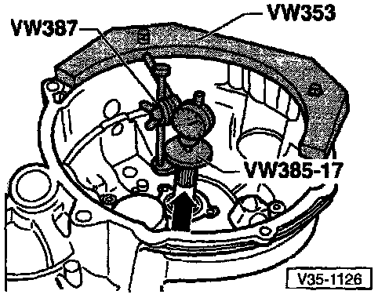
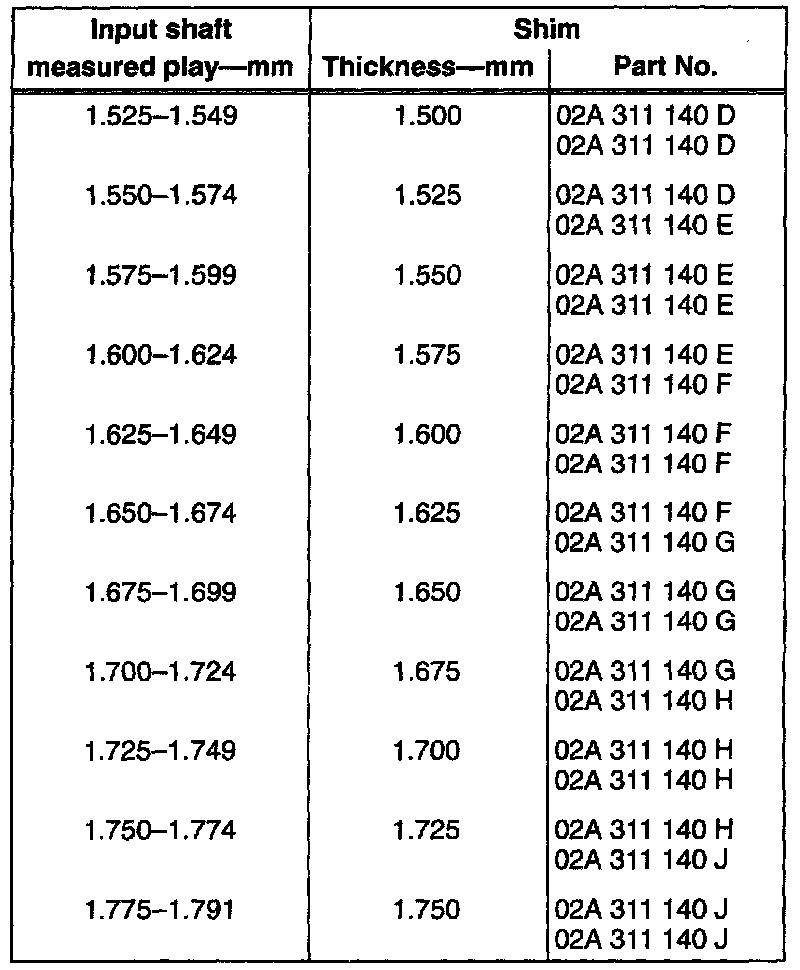

Input Shaft: Adjustments
Determining Thickness Of Shim For Input ShaftNOTE: It is necessary to re-adjust the input shaft when any of the following is replaced:
- Transmission housing
- Clutch housing
- Input shaft
- 4th gear (4GR)
- Input shaft tapered roller bearing
- Press tapered roller bearing outer race, without adjustment shim, into transmission housing to stop
^ Use thrust pad VW 510
- Install input shaft into clutch housing, then install transmission housing
^ Tightening torque: 25 Nm (18 ft lb) plus an additional 90° (1/4-turn)

- Install measuring fixture and dial indicator in clutch housing
- Before taking any measurements, rotate input shaft to settle bearings
- Adjust dial indicator to zero with 1 mm preload
CAUTION: Repeat the procedure for each measurement, otherwise the dial indicator will not return to its original position.
- Press input shaft in direction of dial indicator (arrow)
- Read and record play indicated on dial indicator
^ Example: 1.21 mm



- Determine required thickness of adjustment shim from tables (ref images)
^ Example: Measured play - 1.21 mm, shim thickness from chart = 1.175 mm
- Remove input shaft and press tapered roller bearing outer race out of transmission housing. Use tool VW 447i
- Press tapered roller bearing outer race back into transmission housing with 1.175 mm shim (example)
- Install transmission housing
^ Tightening torque: 25 Nm (18 ft lb) plus additional 90° (1/4-turn)
Checking Adjustment

- Install measuring fixture and dial indicator
- Rotate input shaft to fixture tapered roller bearings
- Press input shaft in direction of arrow and read axial play on dial indicator:
^ Minimum bearing play = 0.01 mm (0.0004 in.)
^ Maximum bearing play = 0.09 mm (0.0035 in.)
NOTE: If the bearing play cannot be measured, but there is perceptible in put shaft play and the input shaft turns freely the adjustment is acceptable.

- Frictional moment (turning torque at bearing preload): max. 20 Ncm (1.8 in lb)